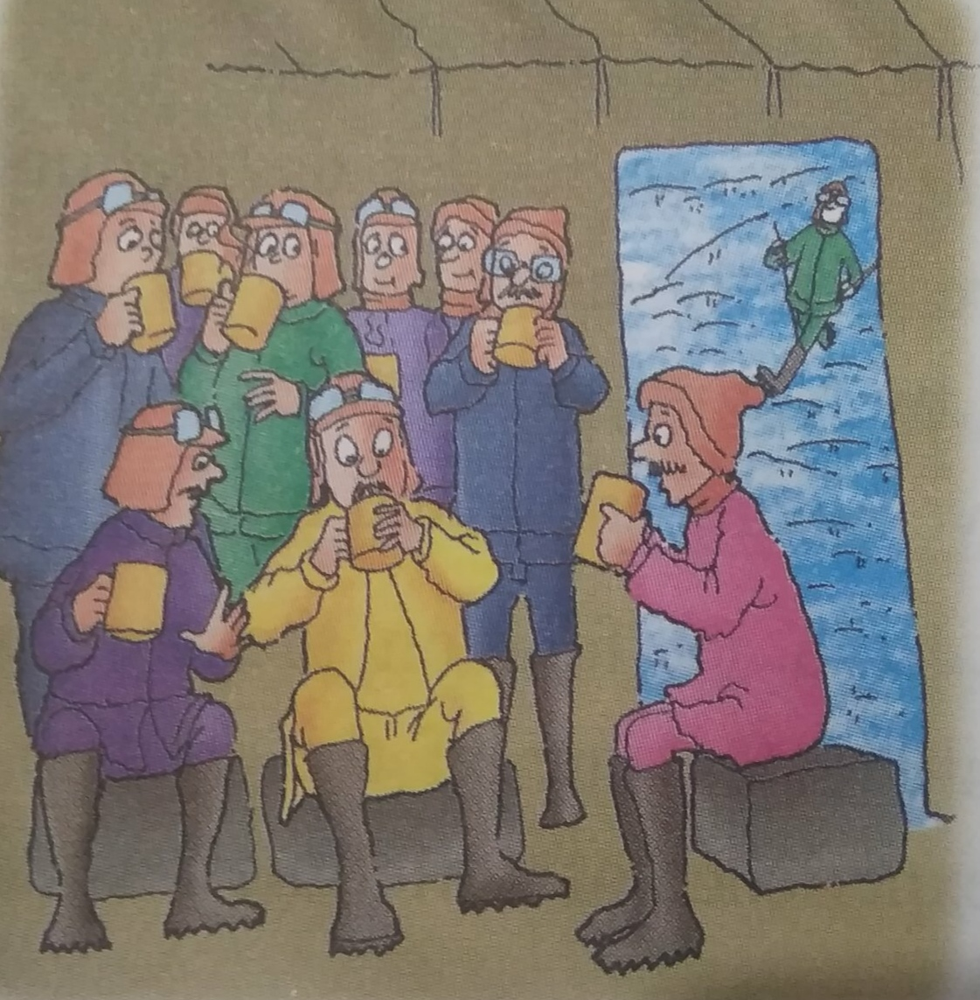

For the love of trees
It was about two hundred years ago when Maharaja Abhay Singh of Jodhpur required some
wood for the construction of his new palace. His soldiers were sent to cut trees in the nearby
region of Khejarli, where the village was abounded with trees When these soldiers set foot in
the village, they were quite surprised to see that the Khejarli village was easily
distinguishable with plenty of trees and other vegetation, and herds of antelopes were
roaming freely near the homes of villagers. The fields were ploughed with simple ploughs
using bullocks or camels, and the soldiers understood that this was done to cause minimal
damage to the fragile desert ecosystem.

They also noticed that the Bishnois kept only cows
and buffaloes, as the rearing of sheep and goats would devour the desert vegetation. The
villagers did not sell dairy products, and did not raise sheep or goats for slaughter. Their
dogs were trained not to kill the wild animals, especially the black bucks Cats were well taken
care of and were trained to kill snakes and rats that ate their grain. They fed the cats with
curd and milk. Astonished, one of the soldiers pointed towards what looked like groves. On
enquiring about those groves, a villager told the soldiers that the groves, locally known as
Orans were maintained for the animals to graze and birds to feed. He said, 'Every single
drop of water is precious and the Organs serve as important rechargers of rainwater in the
aquifers in the desert By noon, the soldiers had toured the small village with a big heart!. All
of them were wonderstruck but more than that, they feared of losing their jobs. It was time
for them to get to work As soon as they started to cut the first tree, a voice came, "Stop!
Please don't cut the tree. It was Amrita Devi, a villager. She stood in front of the tree and said
courageously, 'Before killing this tree, you'll have to kill me. Are you going to give your life
for this tree?" mocked one of the soldiers. "Yes, I will because I love this tree as I love my
family, came the prompt reply Another soldier tried to convince Amrita Devi that cutting a
few trees wouldn't harm anyone. He explained to her that it was the king's order to cut the
trees and it was useless giving her life for the tree. They told her that if she wanted the trees
to be spared, she would have to give them money as bribe. She refused to acknowledge this
demand and told them that she would consider it an act of insult to her religious faith and
would rather give away her life to save the green trees. Amrita Devi didn't budge; she
embraced the tree and said, 'Sar santey rookh rahe to bhi sasto jaan.' (If a tree is saved even
at the cost of one's head, it's worth it.) The furious soldier struck the axe and the tree lover
died in a split second. Amrita Devi's three daughters, who had

accompanied her also met the
same fate. The news spread like wild fire. Soon, young and old Bishnois who opposed the
king's men were sacrificing themselves in a similar manner In all, 363 Bishnois were
martyred The news reached the cars of the king He went to see the people of the village. He
said that he regretted what had happened and promised the villagers to give gold coins as
compensation. But the people refused and said, 'Your Highness! If you want to give us
something, then please ban cutting of trees and hunting of animals. The king accepted their
wish. After that day, the people in the village lived happily but they also remembered their
martyrs who gave up their lives for the trees. World Environment Day is celebrated every
year on 5 June by the Bishnois and other environmentalists around the world. The major
event commemorating the World Environment Day is held at Bishnoi Bhawan, Delhi, by the
Bishnoi Community.
A piece of peace
Humans have always been enthusiastic about exploring and discovering. Antarctica seems
to be a frozen piece of land with no permanent human settlements, and yet permanent
damage is being done to a place which is peacefully beautiful and literally untouched by
human activity, Wonder how? Captain Cook was the first person to cross the Antarctic Circle.
Cook's expedition sailed 109, 500km and penetrated further south than anyone before
Despite his first remarkable circumnavigation of Antarctica in 1773 (done without losing a
single crewmember), Cook failed to find the southern continent itself. Cook simply had poor
luck. Upon leaving the frozen southern seas for the last time, Cook wrote "Thick fogs, snow
storms, intense cold and every other thing that can render navigation dangerous, one has to
encounter, and these difficulties are greatly heightened by the inexpressible horrid aspect of
the Country, a Country doomed by Nature, never once to feel the warmth of the Sun's rays,
but to lie for ever buried under everlasting snow and ice.

Other explorers had a different
point of view. Those who have set foot on the frozen continent have been awe-inspired by its
beauty and tranquillity. On one of the student expeditions on ice, Mohit Agarwal of class XI
described 'an experience of a lifetime': as he calls it He recalls, with great excitement, his
wonderful journey to the edge of the Earth. There were sixteen students and four teachers
headed by Professor Green. They reached the White Continent in the month of September-a
fairly good month to explore Antarctica The students were surprised to see numerous seals
come to shore, and then were horrified to learn that these seals were killed with clubs or
rifles. Professor Green said, 'Sometimes, they are shot at in the water from boats. Three out
of five seals are lost and many seals are wounded Shooting seals in the water is the most
destructive method of hunting them The Professor entertained the students with a piece of
information saying, While trying to kill seals, sealers often get bitten and frequently on the
fingers. The result is a very nasty and painful infection, as the finger goes septic, followed by
the loss of use of that finger. It will still be there but completely immobile It is known as
'Sealers Finger', ironically not used to pull the trigger to shoot scale. The group stood at one
place and simply turned around - they simply couldn't take enough of the beauty of the
quiet, stark, white, glistening land with no wildlife. The twenty-four hour daylight was an
extraordinary experience. Everything seemed to be out of this world. They noticed that even
within a short span of time, climate and weather were not predictable What they really didn't
expect was some of the incredibly warm days they got. Antarctica - and warm? Yes, they
experienced firsthand evidence of global warming. The warm temperatures were softening
the snow and melting the glaciers. While anchored close to the Port Lockroy, the
temperature soared to a tropical 13 degree Celsius. Mohit couldn't help remarking. This is Tshirt
and shorts weather!" By evening (by their watch and not by moonlight!), the group got
into their big tent and they hurried to grab their mugs of hot chocolate milk. They wondered
if they would get only ice cream throughout their stay in Antarctica. With ice and snow
blanketing virtually the entire continent, the environment was believed to be just too harsh
and barren to support anything beyond occasional human visitors. It was believed that
Antarctica has virtually no life. This is untruc Scientists have, in recent years, learnt that while
the life might not be visible, it is most definitely there in the snow, in the ice, in the lakes and
streams under the ice, and in the waters under the ice sheet. It is the kingdom of microbes,
of tiny bacteria and other microscopic organisms. These are extremely small, but an
Antarctic rescarcher has calculated that the mass of living cells in Antarctica equals or
exceeds all the living creatures in the freshwater lakes, rivers and streams elsewhere on
Earth, Mohit, the most inquisitive of all asked Professor Green, 'Antarctica is covered with
ice, how would it matter if some of the ice melts here?' Professor Green couldn't help smiling
and remarked, 'Mohit, it is true that this continent has a lot of ice and only about 04 per cent
of Antarctica is not covered by ice Moreover, in the winter, Antarctica doubles in size due to
the sea ice that forms around the coasts. The sea ice expands up to an extra 20 million
square kilometres of ice around the land mass. That's one and a half USA's, two Australia's
or 50 UK's worth of ice area that forms, then breaks up and melts each year. The entire
group sat wide-eyed, trying to let the fact sink in. Professor Green continued, 'Coming back
to Mohit's question, loss of sea ice could have varied and extensive consequences, such as
contributions to continued Arctic warming, accelerated coastal crosion due to increased
wave activity, impacts to large predators like polar bears and seals that totally depend on
sea ice cover: intensified mid-latitude storm tracks and increased winter precipitation in
western and southern Europe, and less rainfall in the American west. Even the Geography
teachers were amazed after listening to that. One of them spoke about another important
fact, "The global warming effect on Antarctica is five times as strong as anywhere else in the
world. In the last fifty years, the continent has experienced a warming of around 45°F, or
2.5°C. The global warming effect on Antarctica is rapidly decreasing its ice-thickness. For
example, on one of the islands of Antarctica, called Signey, the permanent ice cover of its
lakes has decreased by more than 45% in the last 60 years One of the most worrying aspects
of global warming is its rising sea levels; especially as most of the world's great cities are
located on the coast. Antarctica is the main reason that sea levels are rising, as that is where
the majority of the world's water is locked up in ice, i.e. thousands times more than the
North Pole. Those three days in the white continent built up memories that would last
forever in the minds of each one of those who were there. The expedition was a huge
success. Mohit and his friends managed to bring back about 30kg of ice back from
Antarctica to show their teachers and friends back at school. Five litres melted but they were
able to save the glacier water in the sealed bags that the ice was kept in. The group came
back with the idealism that they can make a difference to the growing threat of Global
Warming in a positive manner.